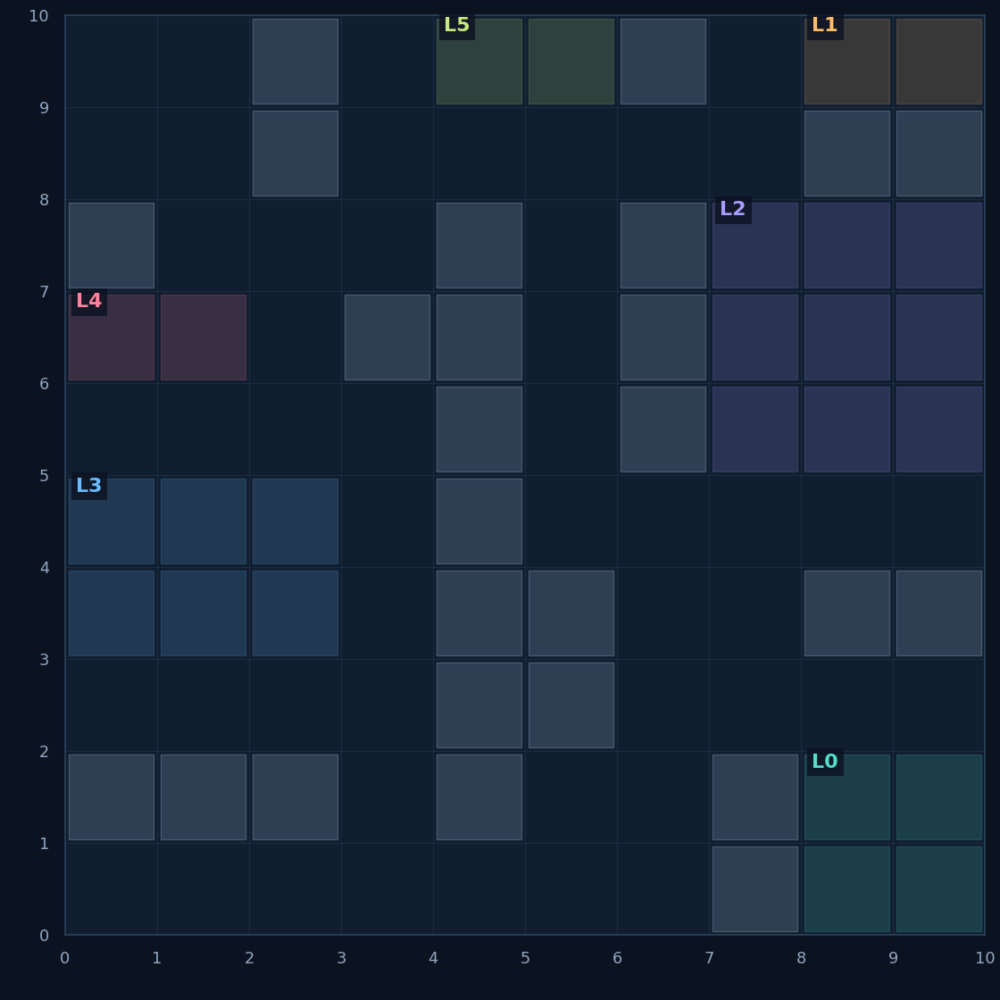
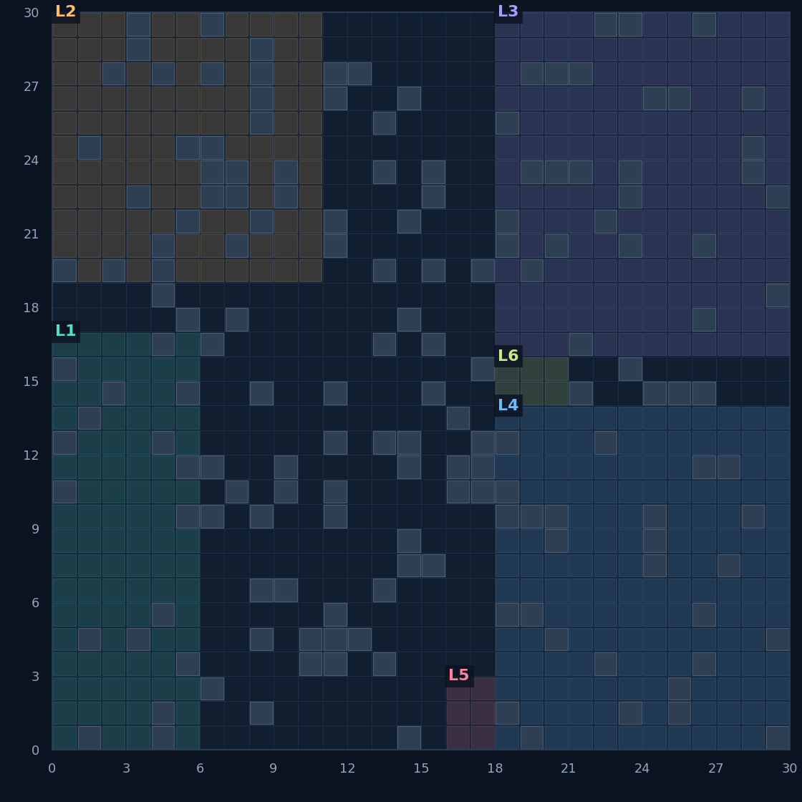

Temporal Logic Task Allocation in Heterogeneous Multirobot Systems
Follow robot teams as they carry out shared tasks, repeat required visits, and obey temporal restrictions.
Two workspaces. Ten tasks.
Colored cells mark task regions; gray cells are obstacles.


Cases 1–8 · 10 × 10 workspace
The shared layout for mail delivery, equipment transport, and recurring team visits. Robot starting positions vary by case.


Cases 9–10 · 30 × 30 workspace
The larger layout for the 12-robot missions. Both cases use these task regions and obstacles, with different task requirements.
Maps show the workspace geometry used in the videos. Select a case below to see its robots and LTL task progress.
Watch the plan unfold.
Select a case, then press play. Use fullscreen for the LTL details.
Mail delivery with a release condition
Two Type 1 robots collect mail together at office L2 and deliver it together to L3. A Type 2 robot visits control room L4 to enable the disinfection process before the pair reaches L3.
Task requirements
- Use the same Type 1 pair for collection and delivery.
- Until Type 2 reaches L4, at most one Type 1 robot may occupy L3. That arrival releases the restriction.
- At the paired L2 visit, fewer than two Type 1 robots may be at L3.
Read the task
as it happens.
The progress display connects logical requirements to robot actions and positions in the recorded plan.
Colors and marker shapes distinguish robot types. Task cards connect the assigned robots to the next region visit in the selected plan.
Amber hatching identifies restricted regions. An until condition releases only when its witness occurs; permanent limits remain active.
Completed visits remain remembered. Recurring tasks use a finite prefix followed by a closed cycle; the videos show that cycle twice.
F = eventually · G = always · U = until · X = next step
L1–L6 label regions on the map. A meeting means the required robots occupy the same region at the same time. Cases 1–8 use three Type 1 and two Type 2 robots; Cases 9–10 illustrate the paper’s team-size rules with 12 Type 1 robots.
Built on formal
task specifications.
Xusheng Luo and Michael M. Zavlanos. “Temporal logic task allocation in heterogeneous multirobot systems.” IEEE Transactions on Robotics, 38(6): 3602–3621, 2022.
Cite this work · BibTeX
@article{luo2022temporal,
title={Temporal logic task allocation in heterogeneous multirobot systems},
author={Luo, Xusheng and Zavlanos, Michael M},
journal={IEEE Transactions on Robotics},
volume={38},
number={6},
pages={3602--3621},
year={2022},
publisher={IEEE}
}